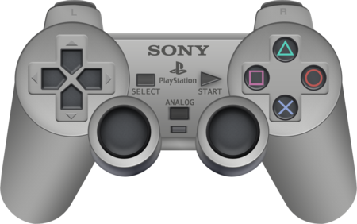
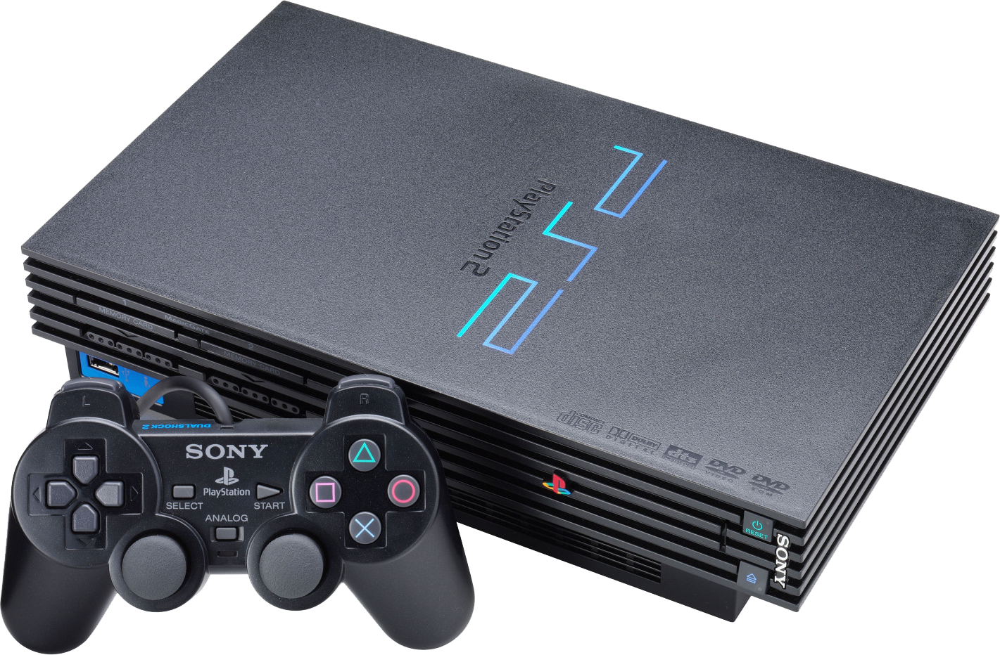
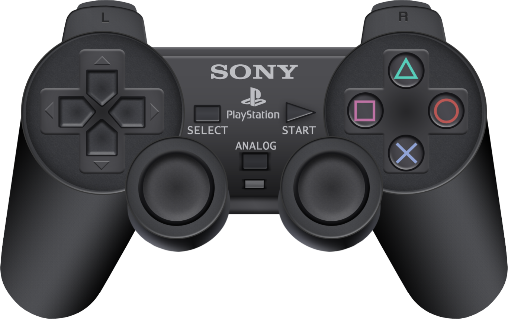
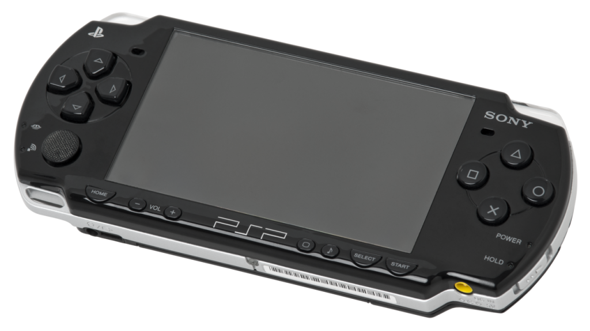
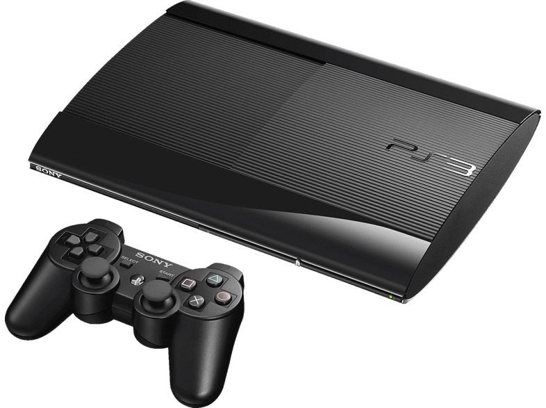
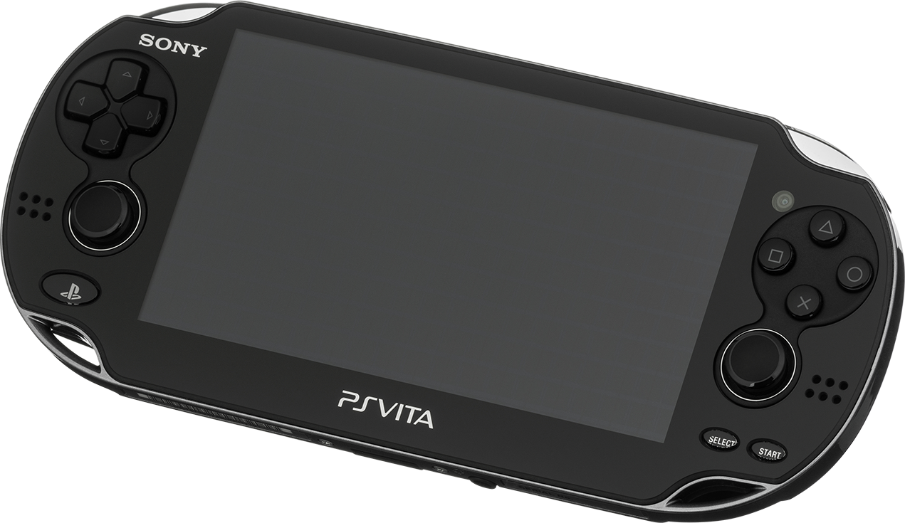
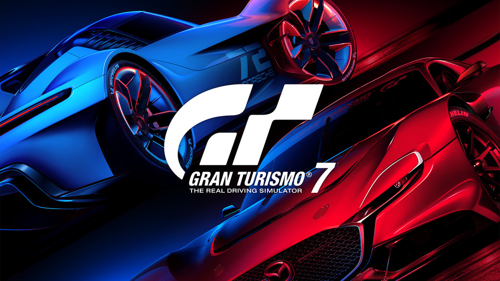
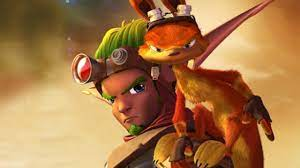
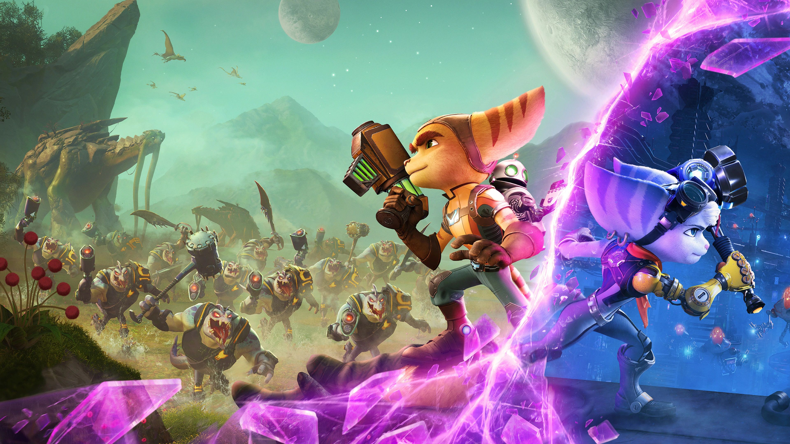
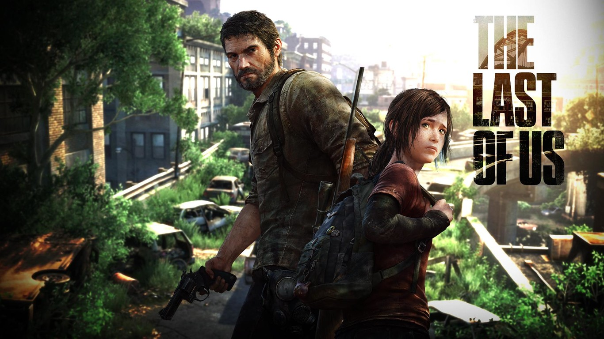

Historia
El origen de PlayStation es irónico. En los años 90, Nintendo buscaba dar el paso que lo consideraría el rey de los videojuegos en el que, para lograrlo, necesitaba pasar del cartucho al CD. Entonces Nintendo decidió aliarse con la empresa japonesas Sony, donde se produciría el primer Nintendo PlayStation.
Sin embargo, mediante una serie de desacuerdos, Nintendo decidió romper acuerdos con Sony y en su lugar se alió con la compañía Philips, con la cual produjo el monumental fracaso conocido como Philips CD-i. Por su parte, Sony se quedaba con su prototipo que, antes de su creación, no tenían interés en en participar en el mercado de las video consolas; pero con el proyecto empezado, decidieron continuar con el desarroyo de esta consola de la mano de su creador Ken Kutaragi. Fue así como Nintendo ayudó indirectamente a la creación de PlayStation.
Consolas
| Año | Nombre | Consolas | Mando |
|---|---|---|---|
| 1994-2000 | PS1 |  |
 |
| 2000-2004 | PS2 |  |  |
| 2005-2007 | PSP |  | |
| 2006-2010 | PS3 |  |  |
| 2013-2017 | PS VITA |  | |
| 2020-X | PS5 |  |
 |
Franquicias
| Nombre | Imagen | Año | Descripción |
|---|---|---|---|
| Gran Turismo |  | 1998 |
Es una serie de videojuegos en simulación de carreras en que intentan emular la apariencia y rendimiento de una gran selección de vehículos, la mayoría de los cuales son reproducciones del mundo real |
| Jak and Daxter |  | 2001 |
La historia se centra en Jak y Daxter, dos amigos que van a aventuras en lugares múltiples en un mundo de ficción, incluyendo selvas, volcanes, ciudades y desiertos. Su genero es el de plataformas 2D. |
| Ratchet and Clank |  | 2002 |
Los protagonistas son Ratchet, un mecánico amante de la acción y Clank, un robot acoplado a su espalda. La temática general del juego es la de ambos viajando por varios planetas y resolver el conflicto principal de cada videojuego. Sus generos son el de plataformas y disparos en tercera persona. |
| God of War |  |
2005 |
Se basa en las aventuras de un semidiós espartano, Kratos, quien se enfrenta a diversos personajes de la mitología griega y nórdica, como Zeus, Heracles y Gaya, entre otros. Sus generos son el de acción-aventura y hack and slash. |
| Uncharted |  |
2007 |
La saga se enfoca en un personaje llamado Nathan Drake, un aventurero caza tesoros, que lo largo de los juegos se embarca en diferentes aventuras junto a su fiel amigo y socio Victor Sullivan y sus intereses amorosos Elena Fisher y Chloe Frazer. Su genero es el de acción-aventura |
| The Last of Us |  | 2013 |
La trama describe las vivencias de Joel y Ellie, un par de supervivientes de una pandemia en Estados Unidos que provoca la mutación de los seres humanos en criaturas caníbales. Sus generos son el de acción-aventura, terror y disparos en tercera persona. |
| Horizon |  |
2017 |
La historia se proyecta en el planeta Tierra, concretamente en el año 3040, en un escenario post apocalíptico donde los seres han vuelto a la epoca de las sociedades tribales como resultado de una catastrofe desconocida en el que ahora la especie dominante son unas máquinas avanzadas. Sus generos son el de acción-aventura, mundo abierto y RPG. |